Philosophy 21
 Apologyfrom Benjamin Jowett, 1871
Apologyfrom Benjamin Jowett, 1871 Critofrom Benjamin Jowett, 1871
Critofrom Benjamin Jowett, 1871 Phaedofrom Benjamin Jowett, 1871
Phaedofrom Benjamin Jowett, 1871 The Republicfrom Benjamin Jowett, 1871
The Republicfrom Benjamin Jowett, 1871 Phaedrusfrom Benjamin Jowett, 1871
Phaedrusfrom Benjamin Jowett, 1871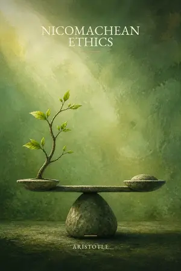
Nicomachean Ethicsfrom D.P. Chase, 1847 Politicsfrom Benjamin Jowett, 1885
Politicsfrom Benjamin Jowett, 1885 Poeticsfrom S. H. Butcher, 1895
Poeticsfrom S. H. Butcher, 1895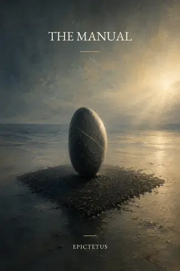
The Manualfrom George Long, 1877- Meditationsfrom George Long, 1862
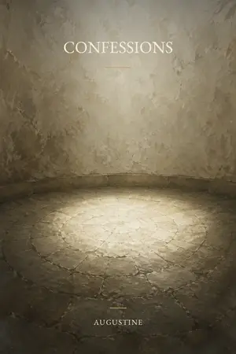
Confessionsfrom Edward Bouverie Pusey, 1838 The Imitation of Christfrom the original
The Imitation of Christfrom the original Essaysfrom Charles Cotton, ed. William Hazlitt, 1877
Essaysfrom Charles Cotton, ed. William Hazlitt, 1877 Meditations on First Philosophyfrom John Veitch, 1901
Meditations on First Philosophyfrom John Veitch, 1901 An Enquiry Concerning Human Understandingfrom the original
An Enquiry Concerning Human Understandingfrom the original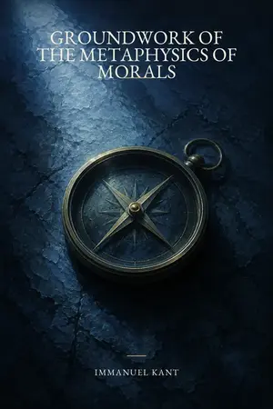
Groundwork of the Metaphysics of Moralsfrom Thomas Kingsmill Abbott, 1879 Fear and Tremblingfrom the original
Fear and Tremblingfrom the original Waldenfrom the original
Waldenfrom the original Utilitarianismfrom the original
Utilitarianismfrom the original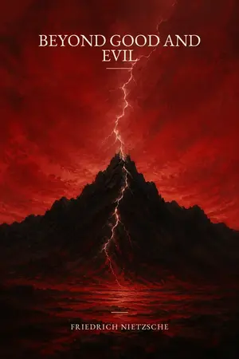
Beyond Good and Evilfrom Helen Zimmern, 1907 On the Genealogy of Moralsfrom Horace B. Samuel, 1913
On the Genealogy of Moralsfrom Horace B. Samuel, 1913
Politics & The State 11
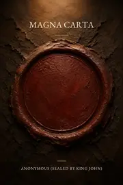
Magna Cartafrom William Sharp McKechnie, 1914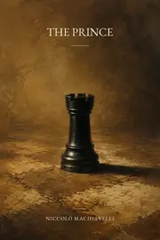
The Princefrom W.K. Marriott, 1908 Leviathanfrom the original
Leviathanfrom the original The US Founding Documentsfrom the original
The US Founding Documentsfrom the original- The Wealth of Nationsfrom the original
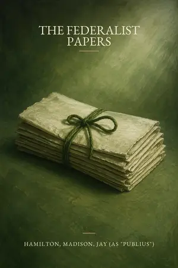
The Federalist Papersfrom the original A Vindication of the Rights of Womanfrom the original
A Vindication of the Rights of Womanfrom the original Democracy in Americafrom Henry Reeve, revised by Francis Bowen, 1862
Democracy in Americafrom Henry Reeve, revised by Francis Bowen, 1862- Narrative of the Life of Frederick Douglassfrom the original
- The Communist Manifestofrom Samuel Moore (edited by Engels), 1888
 On Libertyfrom the original
On Libertyfrom the original
Drama 30
 The Oresteiafrom E. D. A. Morshead, 1881
The Oresteiafrom E. D. A. Morshead, 1881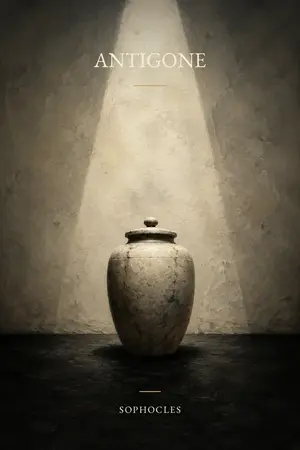
Antigonefrom Francis Storr, 1912 Medeafrom Arthur S. Way, 1894
Medeafrom Arthur S. Way, 1894 Oedipus Rexfrom Francis Storr, 1912
Oedipus Rexfrom Francis Storr, 1912 Oedipus at Colonusfrom Francis Storr, 1912
Oedipus at Colonusfrom Francis Storr, 1912 The Bacchaefrom Arthur S. Way, 1898
The Bacchaefrom Arthur S. Way, 1898 The Taming of the Shrewfrom the original
The Taming of the Shrewfrom the original Richard IIIfrom the original
Richard IIIfrom the original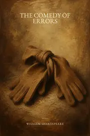
The Comedy of Errorsfrom the original A Midsummer Night's Dreamfrom the original
A Midsummer Night's Dreamfrom the original- Romeo and Julietfrom the original
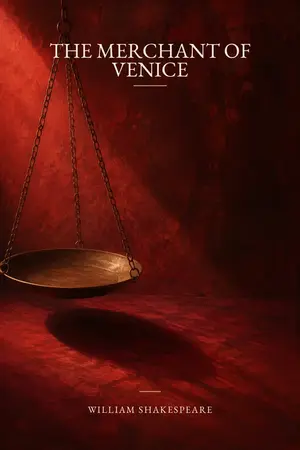
The Merchant of Venicefrom the original Much Ado About Nothingfrom the original
Much Ado About Nothingfrom the original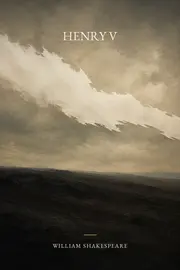
Henry Vfrom the original Julius Caesarfrom the original
Julius Caesarfrom the original- As You Like Itfrom the original
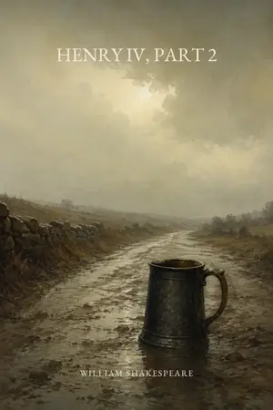
Henry IV, Part 2from the original- Hamletfrom the original
 Twelfth Nightfrom the original
Twelfth Nightfrom the original The Merry Wives of Windsorfrom the original
The Merry Wives of Windsorfrom the original Othellofrom the original
Othellofrom the original Measure for Measurefrom the original
Measure for Measurefrom the original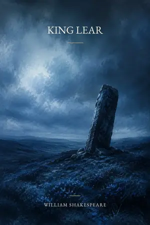
King Learfrom the original Macbethfrom the original
Macbethfrom the original Antony and Cleopatrafrom the original
Antony and Cleopatrafrom the original Coriolanusfrom the original
Coriolanusfrom the original The Winter's Talefrom the original
The Winter's Talefrom the original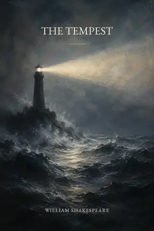
The Tempestfrom the original Cymbelinefrom the original
Cymbelinefrom the original Faust, Part Onefrom Bayard Taylor, 1870
Faust, Part Onefrom Bayard Taylor, 1870
Fiction 32
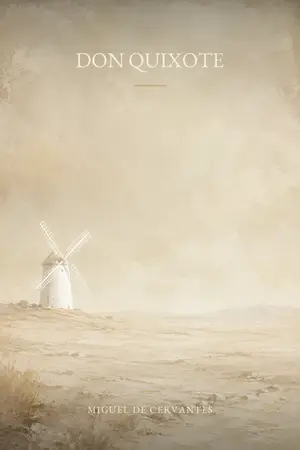
Don Quixotefrom John Ormsby, 1885 Candidefrom William F. Fleming, 1901
Candidefrom William F. Fleming, 1901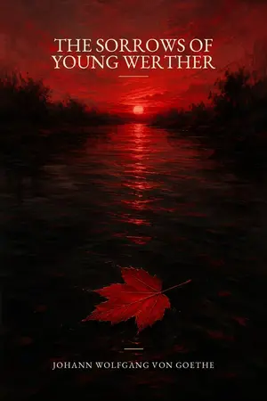
The Sorrows of Young Wertherfrom R. D. Boylan, 1779 Sense and Sensibilityfrom the original
Sense and Sensibilityfrom the original Grimms’ Fairy Talesfrom Edgar Taylor and Marian Edwardes
Grimms’ Fairy Talesfrom Edgar Taylor and Marian Edwardes Pride and Prejudicefrom the original
Pride and Prejudicefrom the original Frankensteinfrom the original
Frankensteinfrom the original Jane Eyrefrom the original
Jane Eyrefrom the original Wuthering Heightsfrom the original
Wuthering Heightsfrom the original Moby Dickfrom the original
Moby Dickfrom the original Great Expectationsfrom the original
Great Expectationsfrom the original Notes from Undergroundfrom Constance Garnett, 1918
Notes from Undergroundfrom Constance Garnett, 1918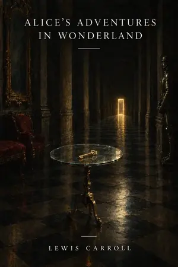
Alice's Adventures in Wonderlandfrom the original- Crime and Punishmentfrom Constance Garnett, 1914
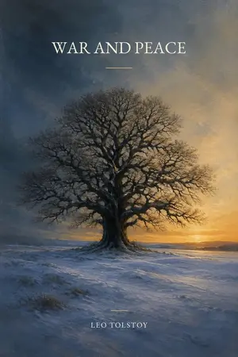
War and Peacefrom Aylmer & Louise Maude, 1922 Middlemarchfrom the original
Middlemarchfrom the original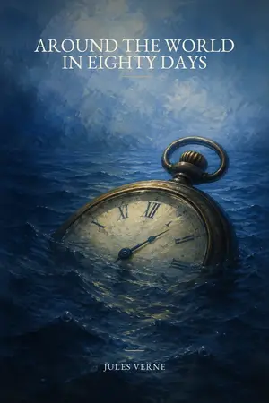
Around the World in Eighty Daysfrom George Towle, 1873 Anna Kareninafrom Constance Garnett, 1901
Anna Kareninafrom Constance Garnett, 1901 The Brothers Karamazovfrom Constance Garnett, 1912
The Brothers Karamazovfrom Constance Garnett, 1912 Niels Lyhnefrom Hanna Astrup Larsen, 1919
Niels Lyhnefrom Hanna Astrup Larsen, 1919 The Adventures of Pinocchiofrom the original
The Adventures of Pinocchiofrom the original Strange Case of Dr Jekyll and Mr Hydefrom the original
Strange Case of Dr Jekyll and Mr Hydefrom the original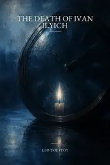
The Death of Ivan Ilyichfrom Louise & Aylmer Maude The Jungle Bookfrom the original
The Jungle Bookfrom the original The Arabian Nights Entertainmentsfrom the original
The Arabian Nights Entertainmentsfrom the original The Awakeningfrom the original
The Awakeningfrom the original Heart of Darknessfrom the original
Heart of Darknessfrom the original Jerusalemfrom Velma Swanston Howard, 1915
Jerusalemfrom Velma Swanston Howard, 1915- A Little Princessfrom the original
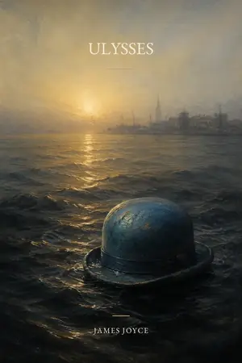
Ulyssesfrom the original To the Lighthousefrom the original
To the Lighthousefrom the original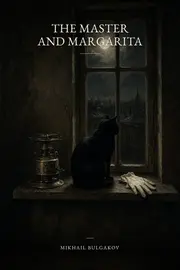
The Master and Margaritafrom the original
Poetry & Epic 6


History 2


War & Strategy 1

Nothing on the shelves by that name. Try the author.
Made with AI from the original, or from the older translation named under each book. A way in, not a scholarly translation. Free to read, in both versions.